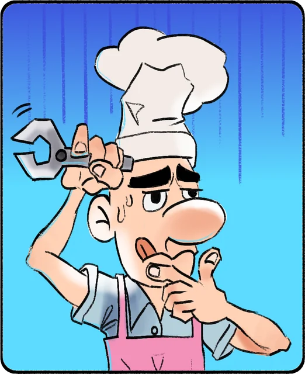

La historia
Compras un «Rasca y gana» en la gasolinera y te toca… un chiringuito. Mala suerte: era un «Rasca y paga». El chiringuito está en ruinas, viene con deuda y tu tío Rogelio Chiringelio sueña con verlo algún día en las 5 estrellas.

Cada día tiene tres fases: preparas el local y compras mejoras, sirves en tiempo real antes de que se agote la paciencia de los clientes y, al cierre, recibes una nota que sube o baja tu reputación. Todo mientras las gaviotas lo llenan todo de «regalitos», se incendia la cocina o aparecen clientes como Karen, Poseidón o tres gaviotas dentro de una gabardina.